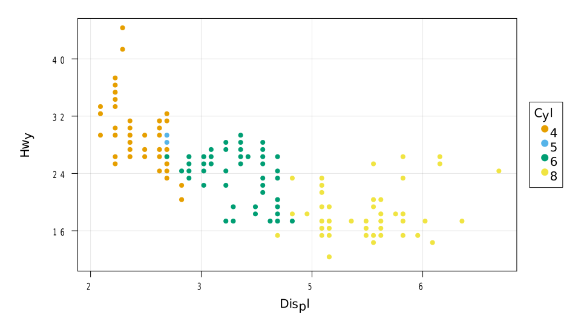
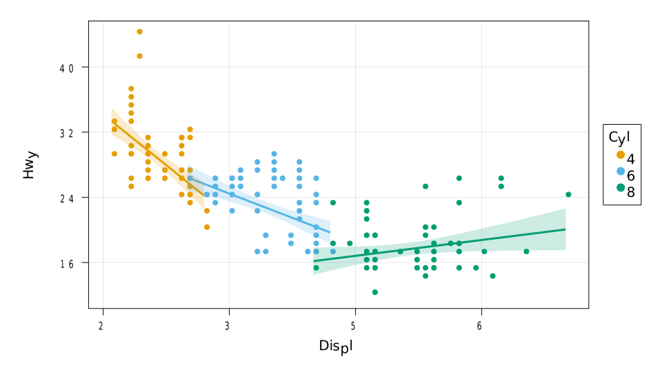
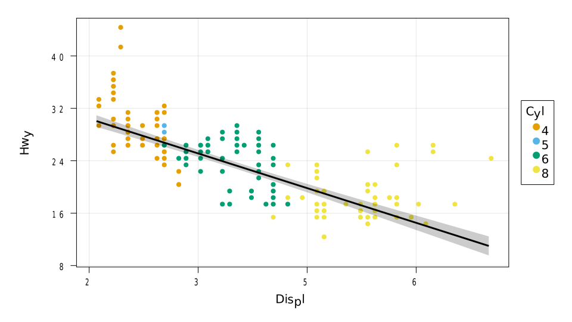
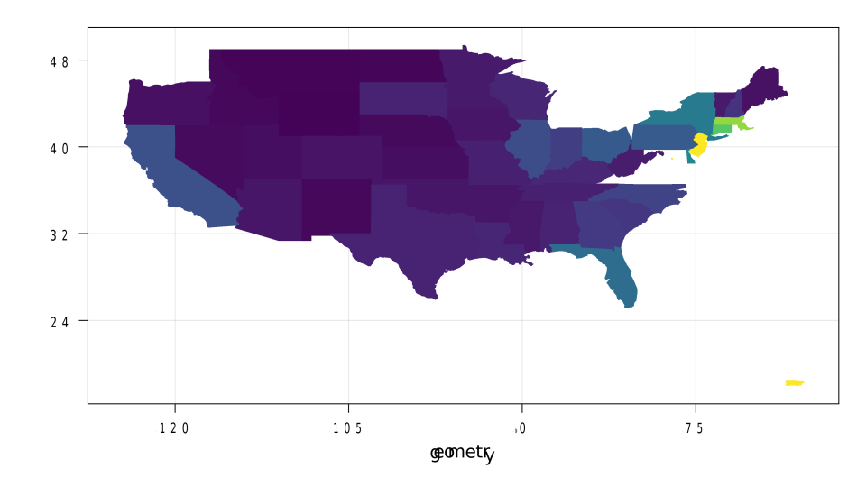
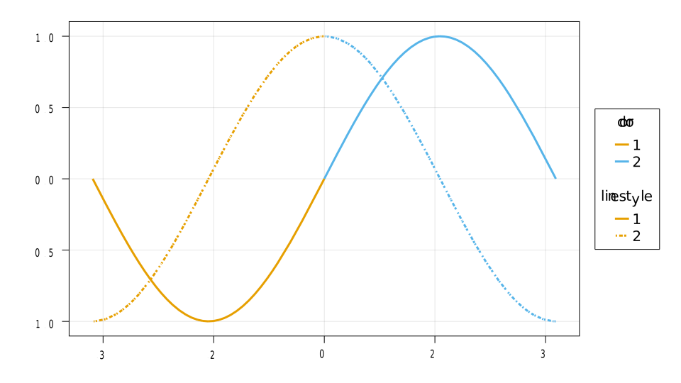
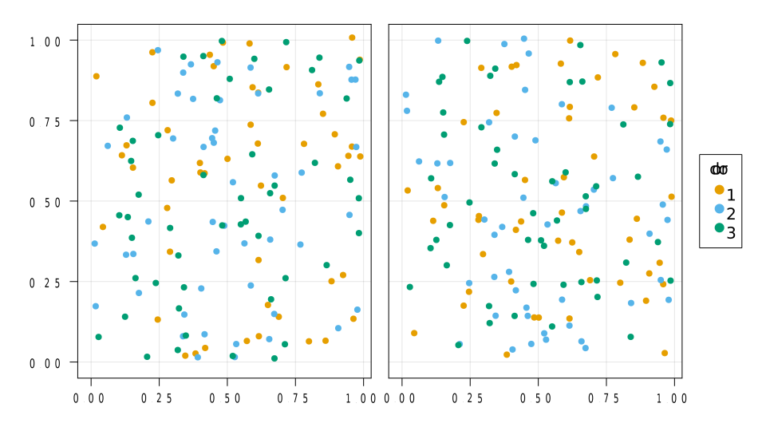

Tutorial
Here we will see what are the basic building blocks of AlgebraOfGraphics, and how to combine them to create complex plots based on tables or other style formats.
Basic building blocks
The most important functions are group, style, and spec. style determines the mapping from data to plot. Its positional arguments correspond to the x, y or z axes of the plot, whereas the keyword arguments correspond to plot attributes that can vary continuously, such as color or markersize. group determines the grouping of the style. The style is split according to the variables listed in group, and then styled using a default palette. Finally spec can be used to give style-independent specifications about the plot (plotting function or attributes).
style, group, and spec work in various context. In the following we will explore DataContext, which is introduced doing data(df) for any tabular style structure df. In this context, style and group accept symbols and integers, which correspond to columns of the data.
Operations
The outputs of style, group, spec, and data can be combined with + or *, to generate a Layers object, which can then be plotted with a package that supports it (so far MakieLayout).
The operation + is used to create separate layer. a + b has as many layers as la + lb, where la and lb are the number of layers in a and b respectively.
The operation a * b create la * lb layers, where la and lb are the number of layers in a and b respectively. Each layer of a * b contains the combined information of the corresponding layer in a and the corresponding layer in b. In simple cases, however, both a and b will only have one layer, and a * b simply combines the information.
Working with tables
using RDatasets: dataset
using AlgebraOfGraphics, AbstractPlotting, CairoMakie
mpg = dataset("ggplot2", "mpg");
cols = style(:Displ, :Hwy);
grp = group(color = :Cyl);
scat = spec(Scatter)
pipeline = cols * scat
data(mpg) * pipeline |> draw
Now let's simply add grp to the pipeline to do the grouping.
data(mpg) * grp * pipeline |> draw Traces can be added together with +.
using AlgebraOfGraphics: linear
lin = spec(linear, linewidth = 3)
pipenew = cols * (scat + lin)
data(mpg) * pipenew |> draw We can put grouping in the pipeline (we filter to avoid a degenerate group).
We can put grouping in the pipeline (we filter to avoid a degenerate group).
filtered = data(filter(row -> row.Cyl != 5, mpg))
filtered * grp * pipenew |> draw This is a more complex example, where we split the scatter plot, but do the linear regression with all the style.
different_grouping = grp * scat + lin
data(mpg) * cols * different_grouping |> draw
Different analyses are also possible, always with the same syntax (again we filter out the degenerate group):
using AlgebraOfGraphics: smooth
filtered * cols * grp * (scat + spec(smooth(span = 0.8), linewidth = 3)) |> draw
Layout
Thanks to the MakieLayout package it is possible to create plots where categorical variables inform the layout.
iris = dataset("datasets", "iris")
cols = style([:SepalLength, :SepalWidth], [:PetalLength :PetalWidth])
grp = group(layout_x = dims(1), layout_y = dims(2), color = :Species)
geom = spec(Scatter) + spec(linear, linewidth = 3)
data(iris) * cols * grp * geom |> draw
Choropleth maps
Choropleth maps can be plotted using the same syntax:
using GeoJSON
states = download("https://raw.githubusercontent.com/PublicaMundi/MappingAPI/master/data/geojson/us-states.json")
states_geo = GeoJSON.read(read(states, String))
data(states_geo) * style(color = :density) * spec(Poly, colorrange = (0, 1000)) |> draw
Non tabular style
The framework is not specific to tables, but can be used with anything that the plotting package supports.
x = [-pi..0, 0..pi]
y = [sin cos] # We use broadcasting semantics on `tuple.(x, y)`.
style(x, y) * group(color = dims(1), linestyle = dims(2)) * spec(linewidth = 3) |> draw
import StatsMakie
using Distributions
mus = 1:4
shapes = [6, 10]
gs = InverseGaussian.(mus, shapes')
geom = spec(linewidth = 3)
grp = group(color = dims(1), linestyle = dims(2))
style(fill(0..5), gs) * grp * geom |> draw
Slicing context
The algebra of graphics logic can be easily extended to novel contexts. For example, dims implements the "slices are series" approach.
s = dims(1) * style(rand(50, 3), rand(50, 3, 2))
grp = group(color = dims(2), layout_x = dims(3))
s * grp * spec(Scatter) |> draw
This page was generated using Literate.jl.